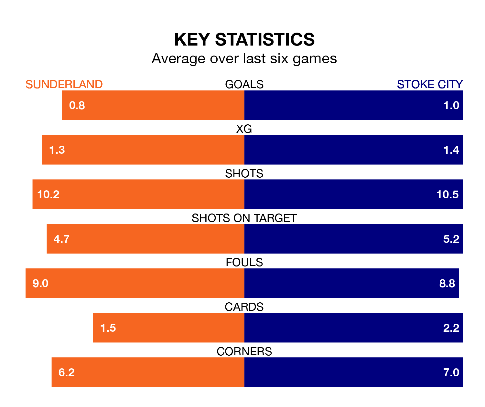

Sunderland host Stoke City on Saturday at the Stadium of Light in EFL Championship.
In their last league match, on January 19, Sunderland lost to Hull City 1-0 at home.
Stoke also lost, 2-1 at home against Birmingham City on January 20, with Jordan Thompson scoring their goals.
In the last 10 years, Sunderland and Stoke have played each other on 11 occasions. Sunderland won four of them, Stoke five, and they drew twice.
On average, the Black Cats scored 1.2 goals and the Potters 1.5 in those matches.
Their last meeting was on October 21, when Stoke won 2-1 at home.
In Jack Clarke, Sunderland have one of the league's most on-form strikers so far this season. He has notched 13 goals in 28 appearances, to sit fourth in the scoring charts.
His goal rate of one every 191 minutes is quicker than that of André Vidigal, Stoke's top scorer with a goal every 272 minutes, and a total of five goals in 20 games.
City are 18th in the table after 28 games, of which they have won eight and drawn eight, earning 32 points.
The Black Cats are eight places ahead of the Potters in 10th, with 12 wins and four draws putting them on 40 points.
With 27 goals in 28 games so far this season, the visitors are scoring at below the league average rate with 1.0 goals per game. But they are conceding fewer than average too, letting in 34 goals at a rate of 1.2 per game.
The home side are also below average scorers, with 1.3 goals per game, compared to a league average of 1.4. They have conceded 1.1 goals per game.
Sunderland are in mixed form in EFL Championship, with two wins and a draw from their last six games.
With two wins and three draws over that period, Stoke's form is slightly better – they have taken nine points from 18, compared to Sunderland's seven.
Saturday's match will be refereed by Andy Davies, who has taken charge of 10 EFL Championship games so far this season, issuing one red card and booking 38 players. He has not awarded any penalties.
The last Sunderland game Davies refereed was a 2-0 home win against Watford on October 4. He is yet to oversee a match featuring Stoke this season.
Updated: 08:51 (UTC), 25/01/24